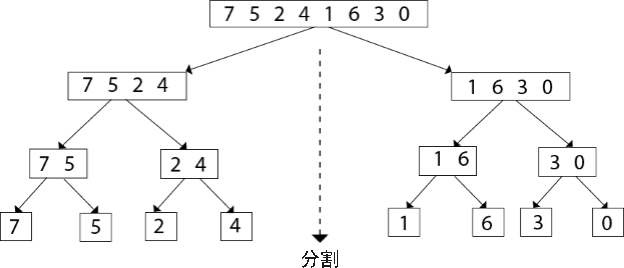

首页 > 编程笔记
归并排序算法
归并排序算法是在分治算法基础上设计出来的一种排序算法，它可以对指定序列完成升序（由小到大）或降序（由大到小）排序，对应的时间复杂度为
归并排序算法实现排序的思路是：
举个简单的例子，使用归并排序算法对 {7, 5, 2, 4, 1, 6, 3, 0} 实现升序排序的过程是：
1) 将 {7, 5, 2, 4, 1, 6, 3, 0} 分割成多个子序列，每个子序列中仅包含 1 个元素，分割过程如下所示：
整个序列不断地被一分为二，最终被分割成 {7}、{5}、{2}、{4}、{1}、{6}、{3}、{0} 这几个序列。
2) 将 {7}、{5}、{2}、{4}、{1}、{6}、{3}、{0} 以“两两合并”的方式重新整合为一个有序序列，合并的过程如下图所示：

图 2 归并排序算法整合所有子序列的过程
对应的伪代码如下：
结合伪代码，如下是用归并排序算法对 {7, 5, 2, 4, 1, 6, 3, 0} 进行升序排序的 C 语言程序：
如下是用归并排序算法对 {7, 5, 2, 4, 1, 6, 3, 0} 进行升序排序的 Java 程序：
如下是用归并排序算法对 {7, 5, 2, 4, 1, 6, 3, 0} 进行升序排序的 Python 程序：
以上程序的输出结果均为：
O(nlogn)。归并排序算法实现排序的思路是：
- 将整个待排序序列划分成多个不可再分的子序列，每个子序列中仅有 1 个元素；
- 所有的子序列进行两两合并，合并过程中完成排序操作，最终合并得到的新序列就是有序序列。
举个简单的例子，使用归并排序算法对 {7, 5, 2, 4, 1, 6, 3, 0} 实现升序排序的过程是：
1) 将 {7, 5, 2, 4, 1, 6, 3, 0} 分割成多个子序列，每个子序列中仅包含 1 个元素，分割过程如下所示：

图 1 归并排序算法分割序列的过程
图 1 归并排序算法分割序列的过程
整个序列不断地被一分为二，最终被分割成 {7}、{5}、{2}、{4}、{1}、{6}、{3}、{0} 这几个序列。
2) 将 {7}、{5}、{2}、{4}、{1}、{6}、{3}、{0} 以“两两合并”的方式重新整合为一个有序序列，合并的过程如下图所示：
图 2 归并排序算法整合所有子序列的过程
归并排序算法的具体实现
对比图 1 和图 2 很容易联想到，归并排序算法可以借助递归的思想实现，对应的伪代码如下：
输入 arr[n] // 输入要排序的序列
merge_sort(arr[n] , p , q): // [p , q] 表示对第 p ~ q 区域内的元素进行归并排序
if p < q : // 对 [p , q] 区域不断采用对半分割的方式，最终将整个区域划分为多个仅包含 1 个元素（p==q）的序列
mid = ⌊(p+q)/2⌋
merge_sort(arr , p , mid)
merge_sort(arr , mid+1 , q)
merge(arr , p , mid , q) // 调用实现归并过程的代码模块
merge_sort() 用于将整个序列分割成多个子序列，merge() 用来合并这些子序列，合并的实现方式为：
- 从 [p, mid] 和 [mid+1, q] 两个区域的元素分别拷贝到 leftarr 和 rightarr 区域。
- 从 leftarr 和 rightarr 区域中各个取出第一个元素，比较它们的大小；
- 将较小的元素拷贝到 [p, q] 区域，然后从较小元素所在的区域内取出下一个元素，继续进行比较；
- 重复执行第 3 步，直至 leftarr 和 rightarr 内的元素全部拷贝到 [p, q] 为止。如果 leftarr 或者 rightarr 有一方为空，则直接将另一方的所有元素依次拷贝到 [p, q] 区域。
对应的伪代码如下：
merge(arr[n] , p , mid , q): // 该算法表示将 [p , mid] 和 [mid+1 , q] 做归并操作
leftnum <- mid - p + 1 // 统计 [p , mid] 区域内的元素个数
rightnum <- q - mid // 统计 [mid+1 , q] 区域内的元素个数
leftarr[leftnum] <- arr[p ... mid] // 分别将两个区域内的元素各自拷贝到另外两个数组中
rightarr[rightnum] <- arr[mid+1 ... q]
i <- 1 , j <- 1
for k <- p to q : // 从 leftarr 和 rightarr 数组中第 1 个元素开始，比较它们的大小，将较小的元素拷贝到 arr 数组的 [p , q] 区域
if leftarr[i] ≤ rightarr[j] :
arr[k] = leftarr[i]
i <- i+1
else :
arr[k] = right[j]
j <- j+1
结合伪代码，如下是用归并排序算法对 {7, 5, 2, 4, 1, 6, 3, 0} 进行升序排序的 C 语言程序：
#include <stdio.h>
//实现分割操作的函数
void merge_sort(int* arr, int p, int q);
//实现归并操作的函数
void merge(int* arr, int p, int mid, int q);
int main() {
int i = 0;
int arr[8] = { 7,5,2,4,1,6,3,0 };
//对 arr 数组中第 1 至 8 个元素进行归并排序
merge_sort(arr, 1, 8);
while (i < 8)
{
printf("%d ", arr[i]);
i++;
}
return 0;
}
//实现分割操作的函数，[p,q] 用于指定归并排序的区域范围，
void merge_sort(int* arr, int p, int q) {
int mid;
if (arr == NULL || p > q || p == q) {
return ;
}
mid = (p + q) / 2;
//将 [p,q] 分为[p,mid] 和 [mid+1,q] 区域
merge_sort(arr, p, mid);
merge_sort(arr, mid + 1, q);
//对分好的 [p,mid] 和 [mid,q] 进行归并操作
merge(arr, p, mid, q);
}
//实现归并操作的函数，归并的 2 个区域分别为 [p,mid] 和 [mid+1,q]
void merge(int* arr, int p, int mid, int q) {
int i,j,k;
int leftarr[100], rightarr[100];
int numL = mid - p + 1;
int numR = q - mid;
//将 arr 数组中 [p,mid] 区域内的元素逐一拷贝到 leftarr 数组中
for (i = 0; i < numL; i++) {
leftarr[i] = arr[p - 1 + i];
}
//将 arr 数组中 [mid+1,q] 区域内的元素逐一拷贝到 rightarr 数组中
leftarr[i] = 2147483647;
for (i = 0; i < numR; i++) {
rightarr[i] = arr[mid + i];
}
rightarr[i] = 2147483647;
i = 0;
j = 0;
//逐一比较 leftarr 和 rightarr 中的元素，每次将较小的元素拷贝到 arr 数组中的 [p,q] 区域内
for (k = p; k <= q; k++) {
if (leftarr[i] <= rightarr[j]) {
arr[k - 1] = leftarr[i];
i++;
}
else {
arr[k - 1] = rightarr[j];
j++;
}
}
}
如下是用归并排序算法对 {7, 5, 2, 4, 1, 6, 3, 0} 进行升序排序的 Java 程序：
public class Demo {
//实现归并排序算法的分割操作
public static void merge_sort(int[] arr, int p, int q) {
// 如果数组不存在或者 [p.q] 区域不合理
if (arr == null || p >= q) {
return;
}
//对[p,q]区域进行分割
int mid = (p + q) / 2;
merge_sort(arr, p, mid);
merge_sort(arr, mid + 1, q);
//对分割的 [p,mid] 和 [mid+1,q] 区域进行归并
merge(arr, p, mid, q);
}
//实现归并排序算法的归并操作
public static void merge(int[] arr, int p, int mid, int q) {
int numL = mid - p + 1;
int numR = q - mid;
//创建 2 个数组，分别存储 [p,mid] 和 [mid+1,q]区域内的元素
int[] leftarr = new int[numL + 1];
int[] rightarr = new int[numR + 1];
int i;
for (i = 0; i < numL; i++) {
leftarr[i] = arr[p - 1 + i];
}
//将 leftarr 数组中最后一个元素设置为足够大的数。
leftarr[i] = 2147483647;
for (i = 0; i < numR; i++) {
rightarr[i] = arr[mid + i];
}
//将 rightarr 数组中最后一个元素设置为足够大的数。
rightarr[i] = 2147483647;
int j = 0;
i = 0;
//对 leftarr 和 rightarr 数组中存储的 2 个区域的元素做归并操作
for (int k = p; k <= q; k++) {
if (leftarr[i] <= rightarr[j]) {
arr[k - 1] = leftarr[i];
i++;
} else {
arr[k - 1] = rightarr[j];
j++;
}
}
}
public static void main(String[] args) {
int[] arr = new int[] { 7, 5, 2, 4, 1, 6, 3, 0 };
//对 arr 数组中第 1 至 8 个元素进行归并排序
merge_sort(arr, 1, 8);
for (int i : arr) {
System.out.print(i + " ");
}
}
}
如下是用归并排序算法对 {7, 5, 2, 4, 1, 6, 3, 0} 进行升序排序的 Python 程序：
#实现归并排序算法中的分割操作，[p,q]为指定分割区域
def merge_sort(arr,p,q):
#列表中没有数据，或者 [p,q]区域不存在
if len(arr) == 1 or p >= q:
return
#对 [p,q] 区域进行分割
mid = int( (p + q) / 2 )
merge_sort(arr,p,mid)
merge_sort(arr,mid+1,q)
#归并 [p,mid] 和 [mid+1,q] 区域
merge(arr,p,mid,q)
#实现归并排序算法中的归并操作，归并区域为 [p.mid] 和 [mid+1,q]
def merge(arr,p,mid,q):
numL = mid - p + 1;
numR = q - mid;
#分别将 [p,mid] 和 [mid+1,q] 区域内的元素拷贝到 leftarr 和 rightarr 列表中
leftarr = arr[p-1:p+numL-1]
rightarr = arr[mid:mid+numR]
# 2 个列表末尾添加一个足够大的数
leftarr.append(float('inf'))
rightarr.append(float('inf'))
i=0
j=0
k=p
#逐个比较 leftarr 和 rightarr 列表中的元素，每次将较小的元素添加到 arr 列表中的 [p,q] 区域内
while k <= q:
if leftarr[i] <= rightarr[j]:
arr[k-1] = leftarr[i]
i = i + 1
else:
arr[k-1] = rightarr[j]
j = j + 1
k = k + 1
arr = [7, 5, 2, 4, 1, 6, 3, 0]
#对 arr 数组中第 1 至 8 个元素做归并排序操作
merge_sort(arr, 1, 8)
print(arr)
以上程序的输出结果均为：
0 1 2 3 4 5 6 7
关注公众号「站长严长生」，在手机上阅读所有教程，随时随地都能学习。内含一款搜索神器，免费下载全网书籍和视频。

微信扫码关注公众号